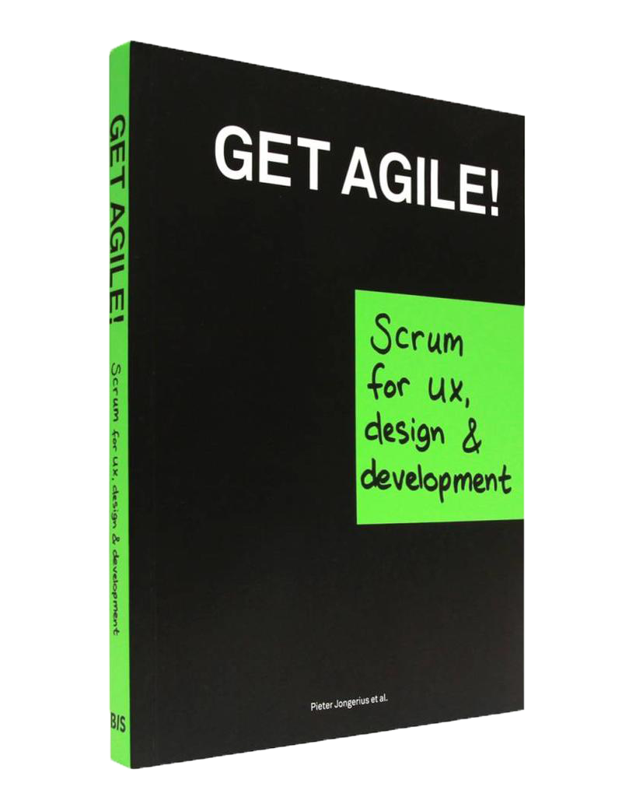

Ik probeer dit leerdoel aan te tonen door als Product Owner de backlog te verbeteren en onderhouden door middel van backlog grooming.
Ik had moeite met het werken op de Scrum manier in het begin. Ik vergat vaak opdrachten onder mijn naam te zetten en deze als 'Done' te markeren als ik klaar was met een opdracht. Gedurende het semester wende ik hier aan en werd het een gewoonte. Omdat ik nul Scrum kennis had voor ik aan dit semester begon, heb ik veel Scrum termen en methodes moeten opzoeken en de Scrum Boards moeten verbeteren na feedback van docenten. Ik hoop deze kennis volgend semester vanaf het begin meteen toe te kunnen passen zodat ik goed van start kan gaan.
Ik probeer dit leerdoel aan te tonen door uit te leggen welke Scrum rollen ik op me heb genomen en wat deze rollen inhouden.
Met behulp van het Scrum boek ‘Get Agile’ en de docenten kan ik nu de scrumrollen benoemen
(Scrum Master, Product Owner en Scrum Team) en van elkaar onderscheiden. Toen ik in sprint 1 de basis
van
Scrum begreep heb ik voorgelegd aan de groep om deze rollen te verdelen. Yassin is aangewezen als
Scrum Master en ik heb de rol van Product Owner op me genomen. Pas in sprint 3 bleek echter dat de
Product Owner
niet binnen de groep verdeeld mag worden aangezien de opdrachtgever en/of docenten dit al zijn.
Ik wist dit niet en zag mijzelf dus als Product Owner. Het volgende stuk heb ik toen geschreven:
Ik ben dus geen Product Owner geweest maar heb wel taken verricht die een Product Owner ook heeft.
Binnen het team zijn we officieël niet gewisseld, maar ik heb ook taken van een Scrum Master uitgevoerd. Volgens het Scrum boek ‘Get Agile’ is het aan de Scrum Master om het Scrum Team te motiveren en het Scrum Team op de hoogte te houden van de planning. De volgende acties die overeenkomen met de taken van een Scrum Master heb ik ondernomen:
Ik ben uiteraard ook deel van het Scrum Team geweest. Ik heb namelijk geholpen onze sprint goals te behalen door opdrachten te maken. Ik heb onderzoek gedaan, geholpen met presentaties, POC's en prototypes gemaakt. Dit bewijs kun je vinden op de 'SCO', 'UX' en 'DEV' pagina's.
Ik wil volgend semester een betere verdeling over de Scrum rollen, want ik merkte dat ik weinig tijd overhield om mijn opdrachten te maken om mijn andere leerdoelen te kunnen aantonen. Ik had het gevoel dat ik mijn projectleden te weinig betrok bij het samenstellen van de Scrum Boards en maken van taken waardoor ik teveel werk op mijn bord legde. In sprint 1 is er binnen de groep een verdeling van de Scrum rollen ontstaan, namelijk:
In de realiteit maakte ik echter ook deel uit van het Scrum Team aangezien ik natuurlijk mijn leerdoelen moet aantonen door opdrachten te maken. Scrum Masten en Scrum Team waren dus mijn twee rollen gedurende de sprints.
Deze rolverdeling is gedurende het semester niet veranderd.
Ik wil volgend semester dus duidelijk maken aan iedereen dat ze zelf communiceren welke taken ze maken en meewerken aan het organiseren van het Scrum board.
Ik probeer dit leerdoel aan te tonen door te beschrijven hoe ik te werk ben gegaan qua onderzoeken.
Voor mijn eerste onderzoek heb ik een aantal deelvragen opgesteld over de opdrachtgever en deze beantwoordt. Omdat Greenhouse Group ook een oplossing wilde voor haar klanten heb ik als onderzoeksvraag 'Met wie associeert Greenhouse zich?' geformuleerd.
Het formuleren van de juiste onderzoeks-en deelvragen vond ik lastig, want de briefing van de opdrachtgever was moeilijk te vertalen. Het formuleren van een Design Challenge en How Might We vragen hielp de briefing duidelijker te maken waardoor er onderzoeks-en deelvragen opgesteld konden worden. Vervolgens kon er gebruikgemaakt worden van onderzoeksmethodes om antwoord op deze vragen te krijgen. De volgende keer zal ik daarom weer een Design Challenge en How Might We vragen opstellen.
Ik probeer dit leerdoel aan te tonen door mijn (ontwikkelings)ambities op korte en lange termijn te beschrijven.
Ik wil me graag ontwikkelen tot een front-end developer. Om dit te bereiken moet ik zowel als designer en developer groeien. Ik wil op het gebied van design dit bereiken door bekend te worden met de meest geaccepteerde design guidelines, leren hoe ik betrouwbare gebruikerstesten uitvoer en geadvanceerd werken met de beste design tools. Op het gebied van development wil ik leren Javascript code te hergebruiken, code van andere aan te passen en leren mijn applicaties te beveiligen. Vandaar dat ik ervoor gekozen heb volgende semester de cyber security specialisatieroute te volgen. Verder ben ik van plan een stage te vinden waar ik als front-end developer aan de slag kan. Ten slotte zoek ik ook naar een baantje als part-time web designer om meer ervaring binnen het vakgebied op te doen.
Van UX en SCO docenten heb ik feedback gekregen dat mijn designs niet voldoende zijn. Ik moet mijn designs baseren op onderzoeken en niet op mijn eigen gevoel. De docenten hebben mij aangeraden mijn designs te baseren op interface guidelines en regels/normen voor minimalistisch design op te zoeken. Zo kan ik groeien als media designer. Ik heb daarom mijn prototypes gebaseerd op de 10 heuristische waarden van de Nielsen Norman Group.
Van DEV docenten heb ik als feedback gekregen dat mijn manier van POC’s maken goed is. Zelf wil ik
groeien als developer door herbruikbare, beheerbare en overdraagbare code te leren schrijven. Ik wil
bekend
worden met de meest populaire frameworks van Javascript, maar eerst wil ik voldoende Vanilla
Javascript kennis hebben. Op dit moment heb ik het gevoel dat ik te weinig tijd besteed aan mijn
programmeerkennis. Ik wil daarom voortaan binnen groepsprojecten meer tijd besteden aan programmeren
en als ik
een individueel project heb, wil ik mijzelf aanzetten om binnen het project meer aandacht te besteden
aan het realiseren.
Tijdens dit semester heb ik aan bovenstaande ambities gewerkt. Mijn designs zijn gedurende het semester beter geworden doordat ik me aan design guidelines heb gehouden. Aan mijn development skills heb ik minder kunnen werken t.o.v. van mijn design skills. Toch heb ik geleerd hoe ik met Git moet werken, hoe ik POC's moet samenstellen, hoe een architectuurdiagram in elkaar steekt en hoe ik module patterns kan programmeren. Ik zal graag meer tijd willen besteden aan mijn development skills volgend semester.
Ik probeer dit leerdoel aan te tonen door een overzicht te geven van mijn communiceren binnen de proftaak.
Ik heb met behulp van afbeeldingen, een minimale hoeveelheid tekst en het geven van een heldere, mondelinge uitleg bijgedragen aan de presentaties. Hieronder staat wat ik heb bijgedragen aan deze presentaties.
Ik ben wegens omstandigheden fysiek gezien slechts 1 keer in dezelfde ruimte geweest met de opdrachtgever om de opdracht te bespreken. Helaas heb ik toen niks kunnen bespreken aangezien ik me eerst nog moest verdiepen in de opdracht. Wel heb ik online veel kunnen praten met de opdrachtgever. Ik nam regelmatig het woord wanneer de opdrachtgever een vraag had over het concept. Ik gaf altijd antwoord met argumenten en een uitgebreide uitleg van onze keuzes. Ook tijdens de wekelijkse tutormeeting sprak ik vaak namens de groep.
Ik was niet het contactpersoon binnen de groep, maar ik heb wel altijd bijgedragen aan de inhoud/het opstellen van de emails. Verder heb ik regelmatig voorgesteld contact op te nemen met de opdrachtgever via email om een afspraak te maken. Hieronder staan de emails die ik heb opgesteld of waar ik aan heb bijgedragen.
Wanneer ik 'library research' deed, hield ik altijd de bronnen bij. De bronnenvermelding heb ik volgens de APA richtlijnen neergezet. Onderaan dit vooronderzoek PDF staat het bewijs.
Ik vond het lastig de communicatie goed te houden. In het begin was het flink wennen aan de nieuwe manier van lesgeven en werken in groepen. Ik interpreteerde berichten verkeerd waardoor ik onder andere een workshop miste. Daarom besloot ik vrijwel elke dag een meeting met de groep in te plannen in de ochtend. Dit verbeterde de communicatie in de groep, maar helaas waren sommige groepsleden niet in staat zich hier aan te houden. Vandaar dat we via WhatsApp contact hielden. Dit bleek echter ook niet 100% 'fail proof' te zijn. Sommige berichten werden namelijk niet/verkeerd gelezen. Verder moest ik wennen aan het feit dat ik mails moest sturen als ik feedback wilde krijgen of een meeting in wilde plannen. De eerste maand van het online lesgeven heb ik daarom weinig feedback gekregen. Het communiceren kostte dit semester extra tijd waardoor de productiviteit lager was. Ik heb me herpakt door regelmatig mails te sturen naar docenten.